Communication 1
Swapping lectures:
- 12/12/18: Organising information: graphs
- 14/12/18: Backtracking algorithms
Communication 2
Please, in your answers to the various exercises online, if you have to write a Python code, be sure that the correct indent is preserved by previewing your post before to publish it
You can use the ``` environment for defining your Python code:
```
write your Python code here
```Communication 3
When you test your function, please use different, even unusual, situations
Writing the right tests is very important since, as you know, it would allow you to catch specific wrong behaviours of the algorithm in presence of specific input values
However, to use only one example to test a function is not enough
Try to test your function by using different kinds of inputs, including the unusual ones, e.g. empty list, lists in which some elements are repeated
Any question about the previous lecture?
Historic hero: John von Neumann

He was a computer scientist, mathematicians, and physicists
Several contribution in quantum mechanics, game theory, and self-replicating machines
Von Neumann architecture: guidelines for building physical electronic computers, included in the document written by John von Neumann for defining the main design principles of the EDVAC, the binary-based successor of the ENIAC
Immutable and mutable values
| type | immutable | mutable |
|---|---|---|
| string | x | |
| integer | x | |
| float | x | |
| boolean | x | |
None | x | |
| set | x | |
| dictionary | x | |
| tuple | x | |
| list | x | |
| deque | x |
Immutable by value
def add_one(n):
n = n + 1
return n
my_num = 41
print(my_num) # 41
result = add_one(my_num)
print(my_num) # 41
print(result) # 42Mutable by reference
def append_one(l):
l.append(1)
return l
my_list = list()
my_list.append(2)
print(my_list) # list([2])
result = append_one(my_list)
print(my_list) # list([2, 1])
print(result) # list([2, 1])Divide and conquer approach
Divide and conquer algorithm is based on four steps
[base case] address directly if it is an easy-to-solve problem, otherwise
[divide] split the input material into two or more balanced parts, each depicting a sub-problem of the original one
[conquer] run the same algorithm recursively for every balanced parts obtained in the previous step
[combine] reconstruct the final solution of the problem by means of the partial solutions
Advantages: usually quicker than brute force
Disadvantages: recursion must be defined carefully
Merge sort
Computational problem: sort all the items in a given list
Merge sort was proposed by John von Neumann in 1945
It implements a divide a conquer approach for sorting elements in a list
It is more efficient than the insertion sort
It needs an ancillary function:def merge(left_list, right_list)
It combines two ordered input lists together so as to return a new list which contains all the elements in the input lists ordered
Merge: description
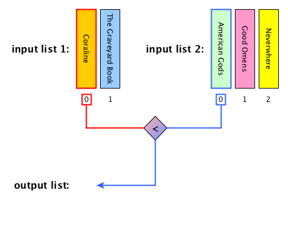
Merge: description
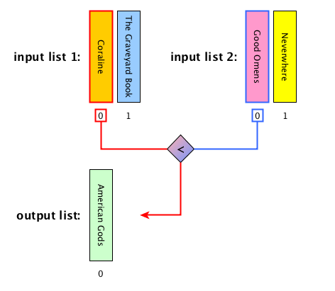
Merge: description
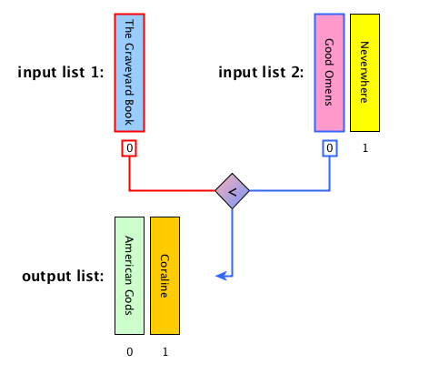
Merge: description
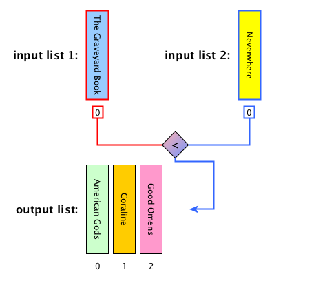
Merge: description
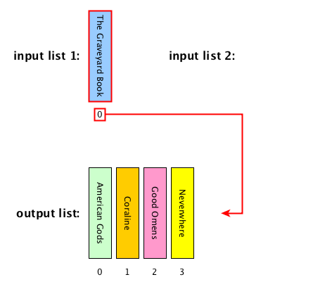
Merge: description

Merge: algorithm
def merge(left_list, right_list):
result = list()
while len(left_list) > 0 and len(right_list) > 0:
left_item = left_list[0]
right_item = right_list[0]
if left_item < right_item:
result.append(left_item)
left_list.remove(left_item)
else:
result.append(right_item)
right_list.remove(right_item)
result.extend(left_list)
result.extend(right_list)
return resultMerge sort: steps
[base case] if the input list has only one element, return the list as it is, otherwise
[divide] split the input list into two balanced halves, i.e. containing almost the same number of elements each
[conquer] run recursively the merge sort algorithm on each of the halves obtained in the previous step
[combine] merge the two ordered lists returned by the previous step by using
def merge(left_list, right_list)and return the result
Merge sort: description
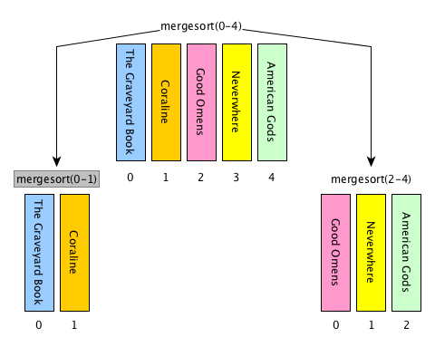
Merge sort: description
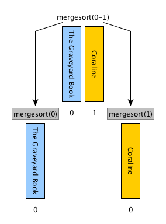
Merge sort: description
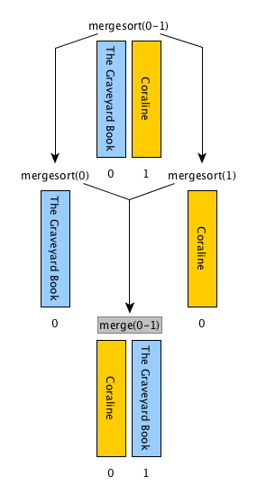
Merge sort: description
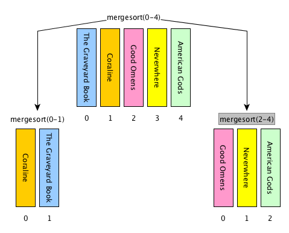
Merge sort: description
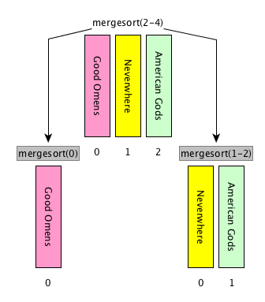
Merge sort: description
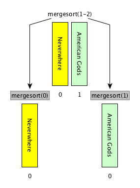
Merge sort: description
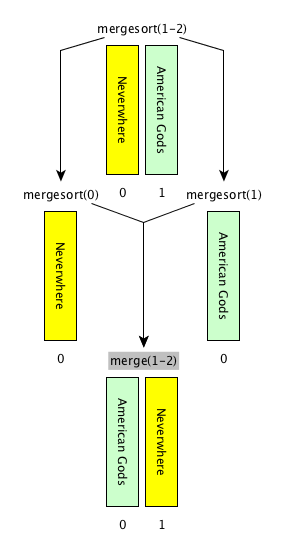
Merge sort: description

Merge sort: description
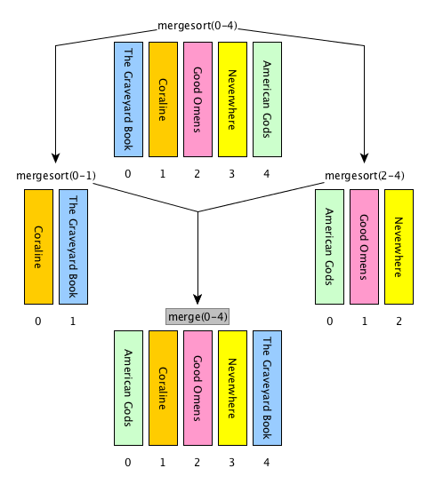
Merge sort: description
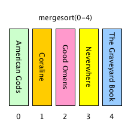
Merge sort: ancillary operations
Floor division: <number_1> // </number_2>
It returns only the integer part of the result number discarding the fractional part
E.g.: 3 // 2 = 1, 6 // 2 = 3, 1 // 4 = 0
Create sublist:
<list>[<start_position>:<end_position>]
Creates a new list containing all the elements in <list> that range from <start_position> to <end_position>-1
E.g., considering my_list = list(["a", "b", "c"]), my_list[0:1] returns list(["a"]), my_list[1:3] returns list(["b", "c"])
Merge sort: algorithm
def merge_sort(input_list):
input_list_len = len(input_list)
if input_list_len <= 1:
return input_list
else:
mid = input_list_len // 2
left = merge_sort(input_list[0:mid])
right = merge_sort(input_list[mid:input_list_len])
return merge(left, right)